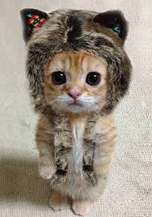
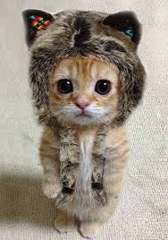

One day there were three cats. A white cat, a black cat, and a brown cat. The white cat said "I'm bored. I don't have anyone to play with." The black cat said "I'm bored. I don't have anyone to play with." The brown cat said "I'm bored. I don't have anyone to play with." So they decided to meet at the park. When they got there, they didn't know what to do. The brown cat wanted to roll in the mud, but the black cat wanted to roll in some coal, but the white cat wanted to chase birds. So they had to agree on something. So they agreed to go for a walk. On their way walk they saw a man fixing the phone wires, a man fixing the road, and a man painting his house green. So they stopped walking and started watching him. When he went in to have lunch they knocked over all the paint right on them.
When they got home their owners didn't recognize them, so they met at the park again. The black cat said "We need to think of a way to get in our homes." While they were thinking the black cat thought of a way to get in their homes, to rinse themselves off in the river. So she said " We could wash ourselves in the river and get the paint off of us so that our owners will recognize us." So that's what they did but when they got out they were wet. But when they got home their owners recognized them. The owners were happy to see their cats and the cats were happy to see their owners.